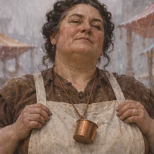
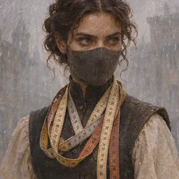

Вечер 1
Лицо не равно маске
Уточнить предмет заказа, увидеть самостоятельный грузовой вход и подготовить безопасное место для добычи.
Открыть сценарий →В Сиверне лицо стало дорогим украшением. Во дворце госпожи Сейр гости меняют внешность вместе с перчатками, а за праздничными окнами ждут люди в плотных вуалях. Приближается последний маскарад сезона; семь знакомых с разными ремёслами получают возможность увидеть двор изнутри.

Перед чтением вступления сверьте место героев, присутствующих людей и предметы с итогом прошлого вечера. Если условия встречи отпали, сыграйте последствия там, где находится партия. Событие по расписанию может произойти за кадром. Герои узнают о нём от тех, кто был на месте.
Остановите перехват в момент передачи. Спросите, кто унёс съёмные кассеты и кого успели вывести под вуалью. За последним фонарём сыграйте встречу с этими людьми, даже если у партии вообще нет добычи.
На придворную примерку не пойдём. Устроим место у воды, где люди сами смогут опознать свои вещи. Предлагаем место у воды для отдельного опознания. Сейр удерживает садок. У воды составлен список желающих вернуть лицо, но ни одна рамка ещё не освобождена.
Сличим размеры контрольной пластины с листом ухода. Попросим показать одну настоящую внутреннюю рамку. Доступные свидетельства — Контрольная пластина садка, Лист ухода за изнанками. Лица хранятся внутри кассет. Снятие наружной маски не возвращает владельцу лицо. Сверяем номер рамки с ответом её владельца. Видим лицо на изнанке и устройство кассеты. Хозяева решают, участвовать ли в выносе; открытый секрет ещё не возвращает лица.
Белые перчатки вытеснили нас из прохода; кассета остаётся в садке. Провожаем носильщиков взглядом до следующей передачи. Запоминаем маршрут переносчиков и выносим пустой чехол как свидетельство. У воды называем точно, сколько лиц не удалось вынести.
Для игры без подготовки: что говорят люди, места в стороне от главной дороги и прохожие. Пометки о правде слухов — только для ведущего; сказанное за столом становится фактом мира, лишь когда вы его подтвердите.
«Кого во дворце обобрали, того соседи всё равно узнают — по голосу, по походке, по рукам. Лицо отнять можно, а человека не отнимешь».
Правда. Так и есть: маска меняет только вид лица, а голос, рост, память и документы остаются (истина мира, знание Эды). Слух помогает игрокам догадаться, как узнать хозяйку после смены маски во втором и четвёртом вечере.
«Кто наденет придворную маску, к утру забудет собственное имя. Потому гости у Сейр такие весёлые — им нечего вспоминать».
Неправда. Суеверие. Наружная маска лишь принимает вид от изнанки и ничего не делает с памятью; сознание и имя остаются при человеке. Нера или Корд отмахнутся от этого слуха, а герои могут спокойно надеть обычную праздничную маску.
«Сейр забирает лица одним касанием левой перчатки. Потому и пуговиц на ней два ряда — чтобы помнить, сколько взяла».
Отчасти правда. Перчатка с двумя рядами серебряных пуговиц настоящая и выдаёт хозяйку под любой маской — это улика «Два ряда серебряных пуговиц». Остальное выдумка: лица держатся в шёлковых изнанках, касанием их не отнимают, а вернуть может только владелец при открытом кольце.
«У дворцовых ворот сначала спрашивают имя и поручение, а на лицо глядят потом, если вообще глядят. Там давно привыкли, что лица меняются чаще перчаток».
Правда. Правда: охрана Орта проверяет насечку приглашения и поручение, а не сходство с портретом (улика «Насечка на приглашении»). Красть чужую внешность для прикрытия не нужно — обычной маски и честного поручения хватает во втором и четвёртом вечере.
«Мотыльки в бальном зале — это и есть украденные лица. Сколько их под куполом, столько людей ходит по Сиверну под вуалью».
Неправда. Суеверие. Мотыльки обычные: хозяйка выпускает их в начале сезона и ловит последних в конце. Лица хранятся на изнанках в рамках Изнаночной. Слух подходит испуганному гостю в зале; ловить мотыльков бесполезно, но и вреда от этого нет.
«После последнего маскарада хозяйка увозит свои диковины из города. Кто не успел на них поглядеть, тот ждёт следующего сезона».
Правда. Правда: коллекцию готовят к отъезду после последнего маскарада (знание Эды). Это срок истории, но не часы: пауза за столом и число бросков время не двигают. Слух напоминает, зачем вся подготовка укладывается в три дня.
«Сорви с гостя дворцовую маску — и лицо само вернётся к хозяину, как голубь в голубятню».
Отчасти правда. Верно лишь то, что наружная маска связана со своей рамкой. Сорванная маска ничего не возвращает: лицо держит шёлковая изнанка в кассете, и вернуть его может только владелец своим касанием при открытом кольце. Слух развеивают надпись в футляре примерочной и лист ухода.
«В Мойке шёлк стирают только дождевой водой. Прачки говорят, белая пыль ему не вредит, а только делает мягче».
Правда. Так говорит Демра во втором вечере; это местный обычай без всякой тайны. Слух — хороший повод заговорить с прачками или со старшей прачкой о работе, прежде чем спрашивать о подъёмнике.
«Колодец гирь бездонный. Что туда уронишь, то через неделю всплывёт в канаве у красилен».
Неправда. Байка возчиков. Колодец — шахта старого подъёмника с дном и служебной лестницей вдоль стены. Радий фыркнет: «Дно там есть, я его мерил». Слух никуда не ведёт, а лестницу герои и так видят в первом вечере.
«В Тихих банях никто не торопит и в лицо не заглядывает. Туда ходят те, кому на людях тяжело, и банщик их ни о чём не расспрашивает».
Правда. Правда: это бани Ивара, место возврата лиц в первом и восьмом вечере. Ивар принимает людей Эды, но работающий станок под своей крышей держать не станет. Слух подскажет героям, куда вести человека в вуали, если Эда занята.
«Охрана во дворце всё знает. Шепни что-нибудь у ворот — к вечеру Дагрен уже слышал».
Отчасти правда. Правда наполовину: Орт узнаёт только то, о чём ему действительно сообщили работник, Корд или замеченный наблюдатель. Неизвестное противнику не повышает его осведомлённость. Слух напоминает игрокам, что опасен свидетель, а не их собственная тревога.
«Улла берёт отдельно за груз и отдельно за ожидание. Зато если уезжает, всегда предупредит — своих она под удар не ставит».
Правда. Правда: перевозчица везёт только объявленные рамки в чехлах, не берёт закрытый неизвестный механизм и уходит после предупреждения, если угрожают её людям (третий и седьмой вечера). Её отказ не закрывает пешие выходы со двора.
Маленькая лавка шорника на другой стороне улицы от Кружевных ворот. Под её навесом пережидают дождь посыльные и возчики, пока охрана не позовёт их к стойке; хозяин не гонит никого, кто купил хоть ремешок. Отсюда видны обе арки, гостевая и тележная. Над дверью висит старый медный колокольчик: шорник уверяет, что его сняли с самих ворот, когда их перековывали, и звенит он тем же голосом.
Горбатый каменный мостик над канавой, куда стекает вода из красилен; она бежит то синей, то жёлтой, смотря что красят выше по течению. Перила белые от дождевой пыли. Здесь встречаются те, кому не хочется, чтобы их видели в мастерских: на мостике издалека слышны шаги с обеих сторон. По обычаю, кто приходит первым, кладёт на перила лоскут — знак, что ждёт.
Узкая чайная в подвале недалеко от дворца, куда после смены спускаются прачки, носильщики и конюхи. Чай подают в толстых кружках, чтобы грели руки, а на стене висит доска, где мелом пишут, кому нужна подмена на завтра. Здесь охотно ругают погоду и охрану, но имя хозяйки вслух не произносят: за столами её зовут просто «сама».
Деревянная будка, прилепившаяся к стене дворца у задних ворот, как ласточкино гнездо. Здесь правят ножницы прачкам и ножи кухне, а возчики, дожидаясь очереди к весам, сидят на чурбаке и пересказывают новости. Над окошком висит связка сломанных ножниц: в Сиверне сломанные ножницы не выбрасывают, а относят точильщику, чтобы мастерская не лишилась удачи.
Переулок за шёлковыми рядами, такой узкий, что двое с корзинами расходятся боком. Над головой на верёвках сушатся крашеные лоскуты, и в дождь с них капает цветная вода, оставляя на камнях синие и жёлтые разводы. Здесь живут штопальщицы и вышивальщицы; ставни у всех открываются внутрь, чтобы не задеть прохожего. Чужого тут замечают сразу, но никто не спрашивает, куда он идёт.
Крошечный сад за оградой из железных прутьев, где вместо цветов стоят серые известковые валуны, расставленные так, что между ними проходят только по одному. Говорят, каждый камень поставлен в память о мастерской, которая закрылась. В дождь с валунов стекает молочная вода. На скамье у входа почти всегда кто-нибудь сидит в вуали: сюда приходят молча побыть одному.
Жилистый старик в кожаном фартуке, с точильным бруском за поясом и бородой, подпалённой искрами.
«Ножницы не врут: тупые — значит, работы было много, а новые — значит, хозяйка разбогатела».
Может рассказать: Точит ножницы прачкам Мойки и знает, что последние дни они работают дотемна: к отъезду хозяйки стирают и укладывают всё праздничное бельё.
Худая прачка-подёнщица с красными от горячей воды руками и мокрым узлом белья на плече.
«Мы шёлк стираем, а не разглядываем. Разглядывают наверху».
Может рассказать: Знает, что старшая прачка Мойки не подпускает к выжимным валам никого с распущенными рукавами, и может показать, как подвязать их тесьмой.
Ломовой возчик в кожаной шапке, с кнутом за голенищем и соломинкой в зубах.
«Во дворец всё везут по весу. Меня самого раз чуть не взвесили вместе с бочкой».
Может рассказать: Знает, что у задних ворот всё ввозимое взвешивают на грузовых весах и что смотритель гонит с рабочей площадки любого, кто на неё ступит.
Сутулый фонарщик с длинным шестом, медной маслёнкой на поясе и шляпой, белой от дождевой пыли.
«Свет у ворот я зажигаю первым, а гашу последним. Всех видел, никого не запомнил — такая служба».
Может рассказать: Знает, что в ночь последнего маскарада фонари на арках Кружевных ворот гасят только после отъезда последней кареты.
Пухлая перчаточница с подушечкой для булавок на запястье и охапкой перчаток, перекинутых через руку, как связка лука.
«Лицо сменить можно, а руки — нет. Я по рукам любого заказчика узнаю».
Может рассказать: Шила перчатки для гостей дворца и знает, что хозяйка носит на левой перчатке два ряда серебряных пуговиц и никогда их не меняет.
Голосистый зазывала шёлковых рядов в полосатом жилете, с охапкой лент через плечо и мокрым от дождя колпаком.
«Шёлк на любой вкус! Тонкий, как дыхание, крепкий, как честное слово!»
Может рассказать: Знает, что из дворца недавно присылали за самым мягким небелёным полотном — на чехлы к отъезду, как сказал посыльный.
8 сессий по 180 минут: 10 минут начала и повторения, три сцены по 45 минут, перерыв 15 минут и завершение 20 минут. Подготовленные герои — уровень 3. Прочитайте первую сессию, выберите состав и передайте игрокам отдельную страницу героев.
В мастерской создайте или откройте свой черновик, выберите импорт пакета и укажите package.json либо нужный файл из variants. Проверьте сценарий и состав в предпросмотре; активацию подтверждает ведущий. Сюжетные развилки, часы давления и жанровые действия разрешаются ведущим — они не становятся автоматически сыгранными событиями.
Пакеты разных размеров используют первые N героев в порядке карточек. Дополнительные герои дают новые роли, но не обязательные ключи к истории. Выбор произвольного состава требует правки черновика и повторной проверки.
Тактильная тревога, опасная роскошь, практическая находчивость и короткие островки заботы. Кампания движется через подготовку, проникновение, подмену и вынос добычи.
Уточнить предмет заказа, увидеть самостоятельный грузовой вход и подготовить безопасное место для добычи.
Открыть сценарий →Проверить служебный и гостевой маршруты как независимые способы доступа и увидеть пределы маскировки лицом.
Открыть сценарий →Подготовить перенос, необязательную подмену и понятный план действий при обнаружении.
Открыть сценарий →Войти выбранным способом, определить реальное положение добычи и получить доступ к рабочему столу.
Открыть сценарий →Проверить подлинность добычи, выполнить выбранный вынос и отдельно решить судьбу станка.
Открыть сценарий →Ответить на реальную реакцию хозяйки, выбрать предел дополнительного риска и собрать группу с добычей у выхода.
Открыть сценарий →Вывести реально спасённую добычу и людей, не превратив дополнительный груз в обязательство погибнуть у ворот.
Открыть сценарий →Вернуть только реально спасённые лица, исполнить или пересмотреть обещания и завершить личные истории всех героев.
Открыть сценарий →Только для ведущего. Сюжетные повороты держатся на мелочах, замеченных заранее: посейте их в названные вечера, а раскрытие отдайте героям, если они догадались раньше.
Все говорят о маскарадной коллекции масок, и стол начнёт планировать кражу самих масок. На деле наружные маски лишь получают вид от тонких шёлковых изнанок на съёмных рамках, а настоящая добыча — двадцать четыре рамки в четырёх кассетах латунного садка. Украденная маска никому не вернёт лица.
Пластина под весами — «Контрольная пластина садка» — рисует всё: кассеты, рамки, кольцо открытия и касание владельца. Если группа сначала пошла в бани или в Мойку, тот же вывод дадут лист ухода Демры или футляр Неры: каждый путь раскрывает поворот целиком. Пусть кто-нибудь из игроков сам скажет вслух, что воровать надо не маски, а Радий только хмыкнет: «Латунь не врёт».
План меняется: нужна не витрина бала, а Изнаночная и рабочий стол. Маскарад становится прикрытием, а не целью, и все три пути ведут к одному мягкому столу.
В городе, где носят чужие лица, легко поверить, что кто угодно может оказаться кем угодно — и что среди героев или союзников затаился двойник. Это не так: маска меняет только вид лица, а голос, рост, руки, привычки и память остаются. Сейр узнают по голосу и левой перчатке с двумя рядами серебряных пуговиц, какое бы лицо она ни надела.
В сцене «Лицо проходит, привычка остаётся» Сейр меняет праздничную маску и продолжает прежнюю фразу тем же голосом. Предложите игрокам назвать совпадения: перчатка, рост, манера отводить руку. Если кто-то заподозрил двойника раньше, пусть это наблюдение его успокоит, а не напугает: двойников здесь нет.
Хозяйку теперь можно найти в любой толпе, а страх подмены исчезает: никто из героев и союзников не окажется чужим. В четвёртом вечере это даёт преимущество — следить за перчаткой, а не за лицами.
Кажется, что мотыльковый станок нужен, чтобы вернуть лица, или что главное сокровище хозяйки — сама коллекция. На деле для возвращения достаточно открыть кольцо и дождаться касания владельца, а станок нужен Сейр лишь для новых похищений. Именно его она ценит дороже всего: за станок она готова отдать часть кассет.
В сцене «Другой стол» рабочая доска станка прямо говорит, что для возвращения он не нужен, а Сейр, если уже знает о вмешательстве, предлагает конкретные кассеты за целый станок. Пусть стол увидит, что хозяйка торгует лицами ради машины. Если сделки нет, тот же вывод дают слова Корда и сама доска.
Станок становится монетой: оставить его — значит допустить новые похищения, взять — занять руки, разобрать — потратить время. Любой выбор честен, а возвращение уже вынесенных лиц от него не зависит. В восьмом вечере Ивар не пустит работающий станок под свою крышу.

Плотная тёмная вуаль, дорожный костюм и ладони, испачканные меловой пылью.
Городская курьерка с хорошей памятью на адреса и привычкой проверять обещанное время встречи.
Вернуть своё лицо и помочь остальным владельцам, не покупая для этого новое чужое несчастье.
При первой встрече. «Я знаю адрес доставки, а не устройство своей тюрьмы. Это честно, и это всё, что я могу обещать».
О городе. «В Сиверне всегда шили маски. Теперь в моде лица, а спрашивать, откуда они, — дурной тон».
О себе. «Меня узнают по голосу и по походке. Соседка узнала по тому, как я ругаюсь на лестнице. Значит, я — это я».
Об адресах. «Списка не дам. Ивар устроит встречу, а показаться ли вам, каждый решит сам».
О риске. «Если придётся уходить с частью — уходите. Я не хочу, чтобы за меня платили вашими лицами».
В конце. «Сколько? Просто число, без подробностей. Остальное расскажете, когда выспитесь».
Она сохранила схему городских доставок Сейр и нашла двадцать трёх других пострадавших. Она не знает, в какой части маски удерживается внешность, и честно называет это пробелом.
Не отдаёт адреса остальных без обещания сохранить их частными и не соглашается приманивать охрану беспомощным владельцем лица.
Показывает доставки, когда герои берутся за наблюдение без требования выдать всех пострадавших. При отказе передаёт обезличенные сведения; проходы можно исследовать без её участия.

Высокая дама в платье цвета старого янтаря; на левой перчатке два ряда серебряных пуговиц.
Хозяйка последнего маскарада, известная коллекцией необычных украшений и безупречным вниманием к гостям.
Увезти коллекцию и ручной станок целыми; остаться человеком, который назначает цену чужой нужде.
При первой встрече. «У вас руки мастера, а не гостя. Чем занимаетесь? Мне всегда интересно, кто приходит в мой дом».
О масках. «Лицо носят, как перчатку: снимают раньше, чем надоест. Разве это не прекрасно, милый?»
О дороге. «Нет, милый, я никогда не путешествую налегке. Вещи — это память, а память — это власть».
Когда торгуется. «Поговорим как деловые люди. Станок или рукоять с держателем — за кассеты, которые я назову. Номера покажу».
Если ей угрожают. «Угроза без потери — просто шум. Покажите, что держите в руках, и тогда поговорим».
После сделки. «Вы торгуетесь лучше, чем крадёте. Это комплимент, хотя вы его и не примете».
Она распорядилась удерживать лица после истечения обещанных сроков и хранит их в съёмных изнанках. Считает людей в вуалях менее важными, чем целость собственной коллекции.
Не принимает пустую угрозу за потерю имущества. Торгуется, если герои действительно удерживают станок, кассеты или её выход; не отдаёт больше, чем оговорено.
При доказанном контроле над рамками объясняет безопасное открытие как часть предметного обмена. Её сведения проверяются кольцом и схемой; разговор с ней не требуется для возврата.

Человек с выбритой головой, широкими рукавами и маленьким медным жетоном на цепочке.
Начальник дворцовой охраны, который спрашивает имя и поручение прежде, чем смотреть на лицо.
Закончить службу с целыми людьми и понятным объяснением любой потери.
У ворот. «Имя и поручение. Лицо мне ни к чему — сегодня у всех лица одинаковые».
О проверке. «Кто видел странное — говорите, что видели. Домыслы оставьте себе».
При досмотре. «Что в чехле? Покажите край — не весь, только край. Больше мне не надо».
Хозяйке. «Договаривайтесь здесь, госпожа, не над головами у работников».
Если узнал о краже. «Пропали кассеты. Гадать, у кого что, не стану. Поставьте всё на землю».
О себе. «Я не крал лиц. Я стоял у ворот. Говорю себе это каждый вечер, и с каждым вечером верю меньше».
Он знает, что лица удерживают против воли, но оправдывает службу тем, что не участвует в самом похищении. Ему неприятны приказы причинять вред работникам ради имущества.
Не сдаёт пост после красивой речи и не становится мгновенным союзником. Может согласиться пропустить работников или задержать преследование при реальной угрозе их жизни.
Объясняет порядок проверки при обычном вопросе о посещении. Увидев подлинный приказ, описывает доступный ему маршрут; отказ не закрывает гостевую створку и лестницу.

Крупная женщина в белом фартуке, с медной меркой на шее и коротко остриженными ногтями.
Старшая прачка, умеющая одним взглядом обнаружить на дорогой ткани недорогой ремонт.
Уберечь свою смену от чужого рискованного предприятия и получить честную плату за работу.
При первой встрече. «Рукава подальше — затянет и шёлк, и руку. Потом не жалуйтесь».
О работе. «Шёлк стираем только дождевой водой. Белая пыль ему не вредит — наоборот, мягче становится».
О своих работницах. «Мои ничего не знают, и пусть так останется. Хотите прятаться — прячьтесь у себя».
О листе ухода. «Нашла его в чехле. Положила в шкаф с образцами. Вы первые, кто про него спросил».
Если помогли. «Ловко. Работу знаете, руки не дрожат. Лист берите — честно заработали».
В конце. «Пусть чехол будет целым. Пустой — тоже вещь, его ещё носить».
Она однажды нашла в чехле лист обслуживания рамок и оставила его в шкафу с образцами. Знает, что Сейр крадёт внешность, но не знает имён всех владельцев.
Отказывается прятать героев среди неосведомлённых работников и поджигать Мойку. Разрешает осмотреть открытый привод, даже если не помогает проникновению.
Даёт лист ухода в обмен на починку обычного чехла или честный разговор о риске. Если отказывает, дубликат тех же указаний выгравирован на направляющей подъемника.

Строгий жилет, плотная дымчатая маска и связка мерных лент вместо украшений.
Работница примерочных, которая предлагает гостям сесть и не прикасаться к чужим вещам без разрешения.
Получить назад своё лицо и выйти с коллегами, не изображая благодарность хозяйке.
При первой встрече. «Присаживайтесь. Чужого без спроса не трогайте — здесь всё чужое».
О маске. «Без изнанки дорогая маска — просто шёлк и лак. Красиво, но никого не держит».
О возвращении. «Я видела, как человек коснулся шёлка, и лицо вернулось. Без станка, без хозяйки».
О себе. «Моя рамка там. Идти за ней первой я не стану. Но и стоять в стороне, когда идут другие, не буду».
Когда вернула лицо. «Вот так. Без зеркала. Мне не нужно зеркало, я и так знаю».
В конце. «Благодарить не буду. Я вам ничего не должна, и вы мне тоже, так честнее».
Её внешность находится среди двадцати четырёх рамок. Однажды она видела возвращение лица при открытом кольце и касании владельца; её собственную рамку ей не дают.
Не надевает на героя украденное лицо ради доказательства и не выходит первой под руки охраны. Может отказаться от сопровождения без потери доступного прохода.
Показывает запасной футляр при просьбе о ремонте. Свой опыт рассказывает наедине; если разговор сорван, механизм и инструкция доступны обычному осмотру примерочной.

Сутулый мужчина с весовыми гирьками в поясе и квадратным фонарём из слюды.
Смотритель грузовых весов, называющий любой предмет сначала по массе, потом по имени.
Закрыть двор после смены и не отвечать за груз, который кто-то перенёс без записи.
При первой встрече. «Сойдите. Вы мне пудов восемь лишнего веса, а недостачу объяснять потом мне».
О пластине. «Слухи я не взвешиваю. Пластина — латунь, полтора фунта, читайте сами».
О подмене. «Весы обманешь, глаза — ненадолго. Крышку откроют, и всё».
Байка. «При старом хозяине на этих весах взвешивали приданое. Одна невеста привезла сундук булыжников и всё равно вышла замуж».
О садке. «Полный садок я взвешивал. Четыре кассеты снимаются порознь. Что в них — не видел и врать не стану».
Если помогли. «Руки у вас правильные. Не дрожат. Таким и лестницу показать не жалко».
Он измерял полный садок и знает, что четыре кассеты снимаются независимо. Лиц внутри не видел; считает слухи правдоподобными, но не выдаёт догадку за знание.
Не соглашается лгать о весе неизвестного груза. Позволяет пользоваться лестницей после безопасной остановки платформы; не требует заклинания или особой силы.
Показывает контрольную пластину тому, кто помогает снять пустые корзины с весов. При отказе пластина остаётся на доступной с улицы стойке; лестницу можно осмотреть самостоятельно.

Синяя накидка, обычная кружевная полумаска и стеклянные флаконы на широком браслете.
Состоятельная изготовительница ароматов, приехавшая посмотреть на модный двор.
Получить свой оплаченный, но удерживаемый дорожный сундук и не потерять репутацию внимательной хозяйки дела.
При первой встрече. «Мой сундук держат во дворе, будто духи могут сбежать! Вы не знаете, где он?»
О дворце. «Здесь всё пахнет воском и чужими деньгами. И чем-то ещё — я пока не поняла чем».
О пропуске. «Пропуск дам. Отвлекать хозяйку не буду — это не моя профессия».
О Сейр. «Её платье пахнет старым янтарём. А руки — металлом. Странно для хозяйки бала».
Если сказали о сундуке. «Я запомню, кто сказал правду. В моём деле это дороже флаконов».
Получив сундук. «Мой сундук! Давайте сюда, я сама. Никогда больше не повезу столько флаконов».
Подозревает, что коллекция масок связана с насилием, однако пока предпочитает задавать вопросы о тканях. Её пригласительный пропуск позволяет привести спутников без украденных лиц.
Не принимает обещание безопасного выхода за гарантию. Может дать пропуск, но отказаться отвлекать Сейр; гостевой путь остаётся доступен через открытое приглашение на примерку.
Даёт изучить пропуск, если герои соглашаются хотя бы выяснить, где её сундук. Не требует вернуть его прежде, чем поможет; отказ не означает донос по умолчанию.

Пожилой человек в чистом полотняном халате, с мягкой кистью за ухом.
Банщик, предоставляющий тихие комнаты людям, которым тяжело бывать в толпе.
Чтобы каждый пришедший мог сам решить, смотреть ли в зеркало и когда уходить.
При первой встрече. «Здесь можно не смотреть в зеркало. Я поворачиваю их к стене для тех, кто не хочет».
О пробной рамке. «В нём никого нет. Учитесь на пустом, пока руки не запомнят».
О станке. «Здесь люди возвращают своё. Того, чем отнимают, под этой крышей не будет».
О встречах. «Каждый решит сам, когда коснуться. Хоть до вечера ждите — вода не остынет».
О погоне. «Боковая дверь — в общий двор. Там людей много, и все одинаково мокрые».
В конце. «Теперь можно. Повернём зеркала обратно — пусть смотрит, кто захочет».
Подготовил отдельные встречи для людей Эды и умеет обращаться с хрупкими тканями. Не знает дворцовых проходов и не обещает восстановить уничтоженную изнанку.
Не позволяет выставить возвращение лиц на зрелище и не скрывает в банях продолжающий работать станок для новых похищений.
Показывает комнаты и порядок встреч, когда группа обсуждает перенос и помощь людям. Его отказ хранить станок оставляет возможность снять рамки и оставить опасный предмет в другом месте.
Шерстяная куртка поверх праздничной рубашки, короткие волосы и широкополая промокшая шляпа.
Перевозчица, которая берёт плату за груз и ожидание раздельно.
Выполнить договорённую работу и вернуться к своим взрослым напарникам без бессмысленной драки.
При первой встрече. «Сначала двор, потом деньги. За груз — одна цена, за ожидание — другая».
Об условии. «Полезут обыскивать моих — предупрежу и уйду. Под багры своих не поставлю».
О грузе. «Рамки в чехлах — беру. А это закрытое, с рукоятью? Нет, это несите сами».
О знаке. «Три удара по борту — и я на месте. Без знака не тронусь».
О пешем пути. «Лошадь можно увести, а ноги — нет. Дорожка за конюшней всегда открыта».
После. «Довезла. Мягкое, тёплое, целое. Деньги — завтра, сегодня все спят».
Готова вывезти рамки в чехлах, если понимает, что перевозят и куда. Не станет увозить закрытый садок с неизвестным опасным механизмом; личных договорённостей с Сейр у неё нет.
После видимой угрозы напарникам уезжает по заранее названному времени мира; разговор за столом ожидание не расходует. Её уход не запирает пеший выход.
Обсуждает расположение выхода при открытом осмотре двора. Даёт точное условие ожидания и повторяет его вслух; никакой скрытой проверки верности нет.

Узкий чёрный сюртук, светлая праздничная маска и чистые хлопковые перчатки.
Хранитель дорогих украшений, предпочитающий короткие вопросы и очень точные названия материалов.
Сохранить руки, свободу и возможность работать после окончания этого вечера.
При первой встрече. «Не мешайте. Или помогайте — только молча. Шёлк не любит болтовни».
О кольце. «Закрытая метка держит. Открытая отпускает, но только к хозяину; чужим рукам не перепадёт ничего».
О пустом ложементе. «Ложемент пустой. Кто подписывал выдачу? Спрашиваю один раз».
О выходе. «Настоящий выход, не на словах? Сначала покажите дверь».
О переносе. «Две к карете, две остаются. Так велено. Я только несу».
В конце. «Я обслуживал садок. Это было. Скажите, что можете мне обещать, — и ничего сверх».
Он обслуживает садок и знает о принуждении владельцев. Не управляет охраной; при настоящей возможности уйти готов оставить её без удобного объяснения потери.
Не принимает угрозу калечить его за переговоры и может громко позвать охрану. Согласится оставить рабочее место при проверяемом безопасном проходе, без обещания всеобщего прощения.
Показывает порядок рамок при осмотре стола или конкретном обмене. Если отказывается, номера, кольца и инструкция доступны на самом садке; его признание не требуется.
Город каменных садов, шёлковых мастерских и узких улиц, над которыми висят вывески из крашеного шёлка. Дождь здесь оставляет на окнах белую пыль, и хозяйки протирают стёкла дважды в день. Колдовство в Сиверне настоящее, но маска меняет только вид лица: соседа по-прежнему узнают по голосу, походке и рукам.
Мастерская в переулке за шёлковыми рядами: длинный стол, печка, корзины обрезков и окно, закрытое пёстрыми лоскутами от чужих глаз. Здесь чинят одежду тех, кому неудобно идти в большой магазин, и никогда не спрашивают, почему заказчик не снимает вуаль. Пахнет утюгом, мелом и мокрой шерстью.
Въезд во дворец под ажурными коваными арками, тонкими, как кружево. Он разделён на проход гостей и дорожку тележек, а над обеими арками висят одинаковые медные колокольчики, которые звенят от каждой повозки. У стойки охраны спрашивают имя и поручение прежде, чем взглянуть на лицо.
Тёплое влажное помещение в нижнем этаже дворца, где стирают праздничные ткани. Гудят выжимные валы, вдоль стен стоят корзины с бельём, а широкая платформа подъёмника уходит в тёмную шахту. На крюках сохнут рабочие фартуки; пахнет мылом, паром и горячим крахмалом.
Узкий зал, где зеркала в дымчатых рамах стоят так тесно, что каждый гость видит себя со всех сторон сразу. Между зеркалами — небольшие примерочные с занавесями из чёрного газа; работницы в строгих жилетах предлагают сесть и ничего не трогать без разрешения. Пахнет пудрой и свечным воском, шаги глушит ковёр.
Бальный зал под стеклянным куполом, где над закрытыми лампами кружат светлые мотыльки, а их тени скользят по лицам танцующих. Гости в масках выбирают между танцевальной площадкой и столиками у стен; музыка играет тихо, чтобы слышать разговоры. Говорят, хозяйка выпускает мотыльков в начале сезона и ловит последних в его конце.
Каменный двор у задних ворот, где взвешивают всё, что ввозят во дворец: на грузовых весах стоят корзины, гири сложены пирамидами. Посреди двора — ограждённый колодец старого подъёмника, и вниз вдоль его стены уходит служебная лестница. Смотритель весов не любит, когда посетители встают на рабочую площадку.
Комната ухода за дорогими праздничными вещами: мягкие рабочие столы, обтянутые сукном, латунные стойки, лампы под матовыми колпаками и широкие двери для грузовых тележек. Здесь пахнет лавандой от моли и тёплым металлом. Работники говорят вполголоса и носят чистые хлопковые перчатки.
Длинная оранжерея под чёрными стёклами, где в кадках растут бесцветные цитрусы: плоды у них белые, как воск, и почти не пахнут. Между кадками лежат широкие гладкие плиты, по которым легко катить тележку. Тёплый влажный воздух и капель с листьев глушат шаги.
Площадка между конюшней и воротами на боковую улицу, мокрая от дождя и истоптанная копытами. У стены ждут ручные повозки, крытая карета и пустые транспортные ящики; большая каретная арка закрыта поперечной балкой. Пахнет сеном, кожей сбруи и мокрой соломой.
Небольшая закрытая купальня в стороне от главных улиц, с отдельными кабинками, чистыми тканями и тихим двором, где растёт старая липа. Тёплая вода журчит в каменных желобах. Сюда приходят люди, которым тяжело бывать в толпе, и банщик никогда не торопит их ни с зеркалом, ни с уходом.
Условия: Все двадцать четыре рамки вывезены целыми; владельцы получили доступ к ним и сами завершили возвращение.
Все лица возвращены. Если станок остался у Сейр, её способность охотиться снова сохраняется; если забран или разобран, эта мастерская прекращает работу.
Цена: Следы проникновения, долги союзникам и полученные ранения остаются. Полное возвращение не отменяет совершённых ради него предательств.
В Тихих банях пусто и тепло. На полотенцах лежат двадцать четыре рамки — пустые, обычные, с открытыми кольцами, как скорлупки после вылупления. Их владельцы разошлись по городу кто утром, кто к вечеру: одни смотрели в зеркало долго, другие не смотрели вовсе. Эда пришила на куртку все двадцать четыре пуговицы и ходит по Сиверну без вуали, разнося чужие письма. Нера вернулась в примерочные — уже не к Сейр, а к мастерице с соседней улицы — и учит новеньких не трогать чужое без спроса. Ивар поворачивает зеркала лицом к комнате. Если станок забрали или разобрали, во дворце больше не снимают лиц, и дождь оставляет белую пыль на стёклах пустой мастерской. Если он остался у Сейр, где-то за пределами города хозяйка уже ищет новый двор и новых должников. Следы проникновения, долги Улле и полученные раны никуда не делись, и никто не делает вид, что спасение было бесплатным. Но в Сиверне есть двадцать четыре человека, которые этим утром посмотрели в мокрое стекло и узнали себя.
Условия: Группа сознательно выходит с частью настоящих рамок и не может либо не хочет возвращаться за остальными.
Вернувшие лица люди получают конкретное спасение; остальные известные владельцы остаются без внешности. Ведущий называет точное число и судьбу оставленного груза, опираясь на действия стола.
Цена: Нельзя назвать частичный вынос общим освобождением. Герои решают, кому обещать дальнейшую помощь, а кому честно отказать.
Рамок на полотенцах меньше, чем пуговиц в кармане у Эды, и это видно сразу. Те, кто получил своё лицо, разошлись по городу; остальные приходят в бани по одному, слушают точное число и номер, который не вернулся, и уходят под вуалью. Эда пришила на куртку столько пуговиц, сколько вернули, а остальные носит в кармане и иногда перебирает пальцами, как чётки. Нера, если её рамка среди спасённых, ходит по Сиверну с открытым лицом и не благодарит — она так обещала. Если нет, она ждёт, и это ожидание — её решение, а не поражение. Ивар держит в шкафу пустой обруч на случай, если однажды кто-то принесёт оставшиеся рамки. Сейр увезла часть коллекции, и куда — знают только колёса её кареты. Никто не называет частичный вынос общим освобождением. Герои сами решают, кому обещать дальнейшую помощь, а кому честно сказать, что сил больше нет. Но шесть, двенадцать или восемнадцать человек этим утром посмотрели в мокрое стекло — и это тоже правда.
Условия: Сейр принимает предложенный обмен: конкретные кассеты за целый станок, захваченное имущество или возможность уйти; герои проверяют рамки до завершения сделки.
Договорённые лица возвращаются, хозяйка сохраняет оговорённую выгоду. Никто не обязан простить её; публичный суд или смена власти не являются условием финала.
Цена: Обмен может оставить ей средство новых похищений либо лишить героев иной добычи. Условия фиксируются вслух, без скрытого автоматического предательства.
Сделка выполнена, и обе стороны ушли со своим. Сейр уехала на рассвете — с тем, что выторговала: станком, деталями или свободной дорогой, — и её карета прошла под Кружевными воротами, не останавливаясь. Договорённые лица вернулись к владельцам: рамки проверены до передачи, номера совпали, кольца открылись. Никто не обязан её прощать, и никто не простил; публичного суда не будет, и дворец по-прежнему стоит над городом. В банях Эда перебирает пуговицы и говорит, что торговаться с хозяйкой было противнее, чем красть. Нера, если её лицо среди выкупленных, отвечает: «Противно. Но я теперь смотрю в зеркало». Если станок остался у Сейр, где-то за горами она снова будет назначать цену чужой нужде; если нет, ей придётся начинать с пустых рук. Условия сделки записаны на листе, и Ивар держит этот лист в шкафу рядом с пустым обручем. Дорогой пропуск оплачен. Счёт за него будут сводить те, кому он открыл дверь.
Условия: Группа отступила, проиграла перехват либо сознательно выбрала спасение людей на месте вместо садка.
Герои и спасённые работники могут выжить, но невынесенные лица не возвращены. Сведения о маршруте отъезда могут стать отдельным будущим приключением, не обещанной победой этой кампании.
Цена: Эда слышит точный отчёт. Утрата лица не означает утрату человеческого достоинства; эпилог возможен и без чудесного восстановления.
Рамок нет — ни на полотенцах, ни в чехлах: Сейр увезла коллекцию, или она так и осталась за дверью Изнаночной. Эда выслушивает точный отчёт до конца, не перебивая, потом кладёт все двадцать четыре пуговицы обратно в карман. «Утрата лица — не утрата меня, — говорит она. — Я это знала и до вас. Теперь знаю, что вы пытались». Нера возвращается к работе в вуали и учится говорить так, чтобы её узнавали по голосу. Ивар не поворачивает зеркала: те, кто приходит к нему, всё ещё не хотят смотреть. Работники, которых удалось вывести, живы, и это не мелочь. Сведения о маршруте Сейр записаны: куда шла карета, сколько было кассет, кто их нёс. Это может стать новой историей — не обещанной победой, а возможностью. В Сиверне по-прежнему идёт белый дождь, и двадцать четыре человека живут без своих лиц, но с собственными голосами, памятью и именами. Права оставаться собой у них никто не отнял.
Авторская подготовка и техническая проверка не заменяют живую игру. Длительность, сложность и эмоциональное восприятие пока не проверены группой. Картину первой встречи можно открыть отдельно. Тактические схемы построены из данных встреч. Полный каталог содержит материалы ведущего — публиковать его целиком для игроков нельзя.